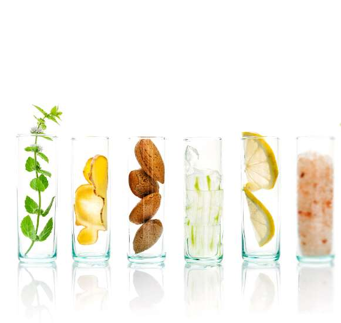
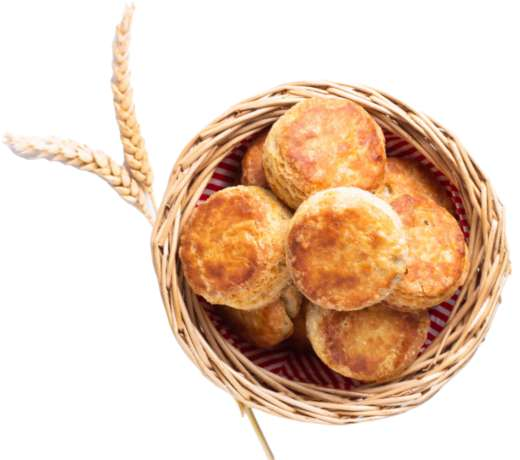
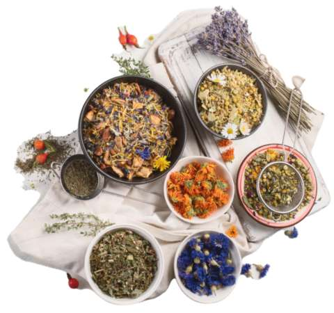

多様な食文化やライフスタイル
ブロッサムは、創業時からお茶を中心とした多様な食文化やライフスタイルをご提案してきました。その他、「もったいない」をコンセプトに、さまざまな理由により捨てられてしまう在庫を買い取り、お買い得価格でご紹介する「ブロッサムマルシェ」を展開。日々、お茶と食の楽しさを発信しています。
TEA
世界のお茶専門店
世界のお茶専門店「ブロッサム」では旬の紅茶、緑茶、烏龍茶はもちろんオリジナルブレンド、フレーバードティーなど年間400種類以上のお茶をご紹介しています。世界中の産地から高品質なお茶を選び抜き鮮度を保ったままパックしました。おいしいお茶との出合いをどうぞお楽しみください。
SCONES

紅茶に最も合う焼き菓子
ブロッサムのスコーンは、お茶との相性を考えたレシピで、一つ一つ自社工場で焼き上げています。外はサクッ、中はふわふわの食感でいくつでも食べたくなるおいしさ。今週末は焼き立てのスコーンと丁寧にいれた紅茶で、とっておきのブランチを楽しんでみませんか？
ABOUT

ブロッサムについて
ブロッサムでは、世界各国の産地から厳選した紅茶や烏龍茶、日本茶はもちろん、オリジナルのブレンドティーやフレーバードティー、ハーブティーなど、年間400種類以上のお茶をご紹介しています。お茶の種類や決まったスタイルにとらわれず、多彩なお茶の魅力を発信しています。
ACCESS
BLOSSOM
所在地 : 沖縄県浦添市西洲3-1-1サンエー浦添西海岸PARCO CITY 1F
TEL : 098-875-1211
営業時間 : 10:00～22:00
定休日 : 不定休